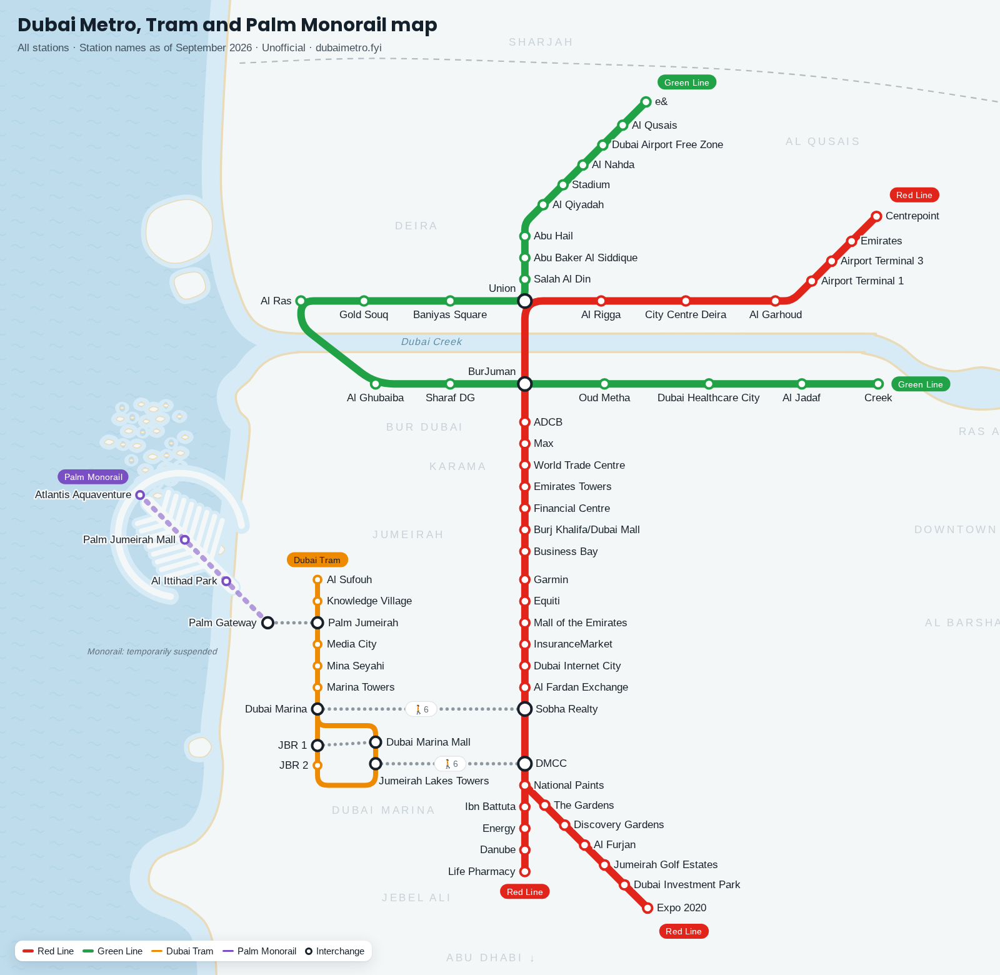

Dubai Metro Map › Stations
Dubai Metro stations: new and old names
All 68 stations of the Dubai Metro, Dubai Tram and Palm Monorail, with their lines and fare zones. 23 of them are also known by another or an earlier name; find the current name below.

Stations with other or former names
| Current name | Other or former names | Lines |
|---|---|---|
| ADCB map | Al Karama | Red Line |
| Al Fardan Exchange map | Al Khail, Nakheel | Red Line |
| Al Garhoud map | GGICO | Red Line |
| BurJuman map | Khalid Bin Al Waleed | Red Line, Green Line |
| Centrepoint map | Al Rashidiya, Rashidiya | Red Line |
| City Centre Deira map | Deira City Centre | Red Line |
| Danube map | Jebel Ali Industrial | Red Line |
| DMCC map | Jumeirah Lakes Towers, JLT | Red Line |
| e& map | Etisalat, Etisalat by e& | Green Line |
| Energy map | DUBAL | Red Line |
| Equiti map | Umm Al Sheif, First Abu Dhabi Bank, First Gulf Bank | Red Line |
| Expo 2020 map | Expo City Dubai | Red Line |
| Garmin map | ONPASSIVE, Al Safa, Noor Bank | Red Line |
| Gold Souq map | Palm Deira | Green Line |
| InsuranceMarket map | Mashreq, Sharaf DG (Red Line) | Red Line |
| Jumeirah Lakes Towers map | JLT | Dubai Tram |
| Life Pharmacy map | UAE Exchange, Jebel Ali | Red Line |
| Max map | Al Jafiliya | Red Line |
| Media City map | Dubai Media City | Dubai Tram |
| National Paints map | Jabal Ali, Jebel Ali, Nakheel Harbour & Tower | Red Line |
| Palm Jumeirah Mall map | Nakheel Mall | Palm Monorail |
| Sharaf DG map | Al Fahidi | Green Line |
| Sobha Realty map | Dubai Marina, DAMAC Properties | Red Line |
Interchanges and walking links
- BurJuman map: change between the Red Line and Green Line inside the station.
- Union map: change between the Red Line and Green Line inside the station.
- Dubai Marina map and Sobha Realty map: about 6 minutes on foot.
- Jumeirah Lakes Towers map and DMCC map: about 6 minutes on foot.
- Palm Jumeirah map and Palm Gateway map: about 8 minutes on foot.
- Jumeirah Beach Residence 1 map and Dubai Marina Mall map: about 12 minutes on foot.
All stations A–Z
| Station | Lines | Zone |
|---|---|---|
| Abu Baker Al Siddique map | Green Line | 5 |
| Abu Hail map | Green Line | 5 |
| ADCB map | Red Line | 6 |
| Airport Terminal 1 map | Red Line | 5 |
| Airport Terminal 3 map | Red Line | 5 |
| Al Fardan Exchange map | Red Line | 2 |
| Al Furjan map | Red Line | 2 |
| Al Garhoud map | Red Line | 5 |
| Al Ghubaiba map | Green Line | 6 |
| Al Ittihad Park map | Palm Monorail | |
| Al Jadaf map | Green Line | 6 |
| Al Nahda map | Green Line | 5 |
| Al Qiyadah map | Green Line | 5 |
| Al Qusais map | Green Line | 5 |
| Al Ras map | Green Line | 5 |
| Al Rigga map | Red Line | 5 |
| Al Sufouh map | Dubai Tram | 2 |
| Atlantis Aquaventure map | Palm Monorail | |
| Baniyas Square map | Green Line | 5 |
| Burj Khalifa/Dubai Mall map | Red Line | 6 |
| BurJuman map | Red Line, Green Line | 6 |
| Business Bay map | Red Line | 6 |
| Centrepoint map | Red Line | 5 |
| City Centre Deira map | Red Line | 5 |
| Creek map | Green Line | 6 |
| Danube map | Red Line | 2 |
| Discovery Gardens map | Red Line | 2 |
| DMCC map | Red Line | 2 |
| Dubai Airport Free Zone map | Green Line | 5 |
| Dubai Healthcare City map | Green Line | 6 |
| Dubai Internet City map | Red Line | 2 |
| Dubai Investment Park map | Red Line | 1 |
| Dubai Marina map | Dubai Tram | 2 |
| Dubai Marina Mall map | Dubai Tram | 2 |
| e& map | Green Line | 5 |
| Emirates map | Red Line | 5 |
| Emirates Towers map | Red Line | 6 |
| Energy map | Red Line | 2 |
| Equiti map | Red Line | 2 |
| Expo 2020 map | Red Line | 1 |
| Financial Centre map | Red Line | 6 |
| Garmin map | Red Line | 2 |
| Gold Souq map | Green Line | 5 |
| Ibn Battuta map | Red Line | 2 |
| InsuranceMarket map | Red Line | 2 |
| Jumeirah Beach Residence 1 map | Dubai Tram | 2 |
| Jumeirah Beach Residence 2 map | Dubai Tram | 2 |
| Jumeirah Golf Estates map | Red Line | 3 |
| Jumeirah Lakes Towers map | Dubai Tram | 2 |
| Knowledge Village map | Dubai Tram | 2 |
| Life Pharmacy map | Red Line | 1 |
| Mall of the Emirates map | Red Line | 2 |
| Marina Towers map | Dubai Tram | 2 |
| Max map | Red Line | 6 |
| Media City map | Dubai Tram | 2 |
| Mina Seyahi map | Dubai Tram | 2 |
| National Paints map | Red Line | 2 |
| Oud Metha map | Green Line | 6 |
| Palm Gateway map | Palm Monorail | |
| Palm Jumeirah map | Dubai Tram | 2 |
| Palm Jumeirah Mall map | Palm Monorail | |
| Salah Al Din map | Green Line | 5 |
| Sharaf DG map | Green Line | 6 |
| Sobha Realty map | Red Line | 2 |
| Stadium map | Green Line | 5 |
| The Gardens map | Red Line | 2 |
| Union map | Red Line, Green Line | 5 |
| World Trade Centre map | Red Line | 6 |